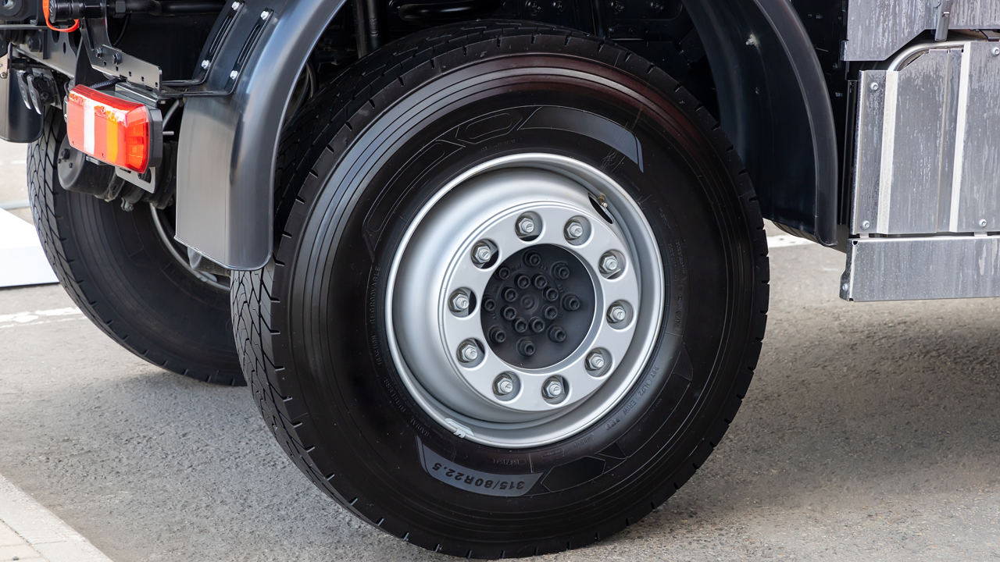

Home / Blog / FMCSA's 2026 SMS Overhaul
COMPLIANCE GUIDEFor the first time, FMCSA is scoring what a driver should have caught on a pre-trip walkaround as its own category, separate from what a mechanic finds in the shop. Here's what's actually changing, and why it raises the stakes on tire condition specifically.
Published September 14, 2026 · Good Hope Retreaders

The Federal Motor Carrier Safety Administration is in the middle of the biggest rebuild of its Safety Measurement System (SMS) since the program launched in 2010. The changes were laid out in a November 2024 Federal Register notice and have been phasing in through 2025 and into 2026. For most of what a fleet does day to day, the overhaul is background noise — different category names, a simplified scoring scale. But one specific change lands directly on tire condition, and it's worth understanding before it shows up in your carrier profile.
The familiar seven BASICs (Behavior Analysis and Safety Improvement Categories) are being renamed and restructured into six "compliance categories." Controlled Substances/Alcohol is being folded into Unsafe Driving, and Crash Indicator and out-of-service violations more broadly are being redistributed across the remaining categories. FMCSA is also collapsing its violation code list — currently numbering in the thousands — down to a much smaller set of roughly 100 violation groups, and simplifying its old 1-to-10 severity weighting down to essentially two tiers, with out-of-service and driver-disqualifying violations carrying the higher weight. Coverage of the rollout from FleetOwner and industry compliance publications describes this as the most significant structural change to carrier scoring since SMS launched.
Under the current system, every vehicle-condition violation — whether it's something a mechanic finds during a full teardown or something a driver should have caught walking around the truck — lands in one Vehicle Maintenance BASIC. FMCSA's own prioritization and scoring-update materials describe a new structure that splits this in two: a "Vehicle Maintenance" category for defects more commonly identified by a mechanic performing routine maintenance or found during a full (Level 1) inspection, and a brand-new "Vehicle Maintenance: Driver Observed" category for defects that could reasonably have been caught during a driver's own walk-around or a roadside Level 2 inspection.
That distinction did not exist before. A worn tire, a flat, or an obviously damaged sidewall — the kind of thing a driver walks right past during a pre-trip check — now generates a scored violation in a category built specifically to isolate driver walkaround performance from shop maintenance quality. For a fleet, that means a bad tire showing up in an inspection is no longer just "a vehicle maintenance hit" in the aggregate — it's data on whether your drivers are actually doing pre-trip inspections, separate from data on whether your shop is doing its job. Reporting from TheTrucker.com and a compliance breakdown from insurance and risk advisory firm Cottingham & Butler both describe the new Driver Observed category the same way: it exists to let FMCSA — and by extension brokers, shippers, and insurers who pull SMS data — see whether a maintenance problem traces back to drivers skipping or rushing pre-trip inspections, versus a shop falling behind on service intervals.
Tires are one of the most visually inspectable components on a commercial vehicle — tread depth, sidewall damage, and obvious underinflation are all things a driver can and should catch without tools during a walkaround. That's exactly the category of defect the new Driver Observed score is built to isolate. And tires already carry outsized weight in the numbers: in the 2026 CVSA International Roadcheck, tires were the #2 out-of-service violation category industry-wide, behind only brakes, accounting for 20.9% of all vehicle OOS violations — a pattern we covered in detail in our breakdown of the 2026 Roadcheck data. The federal tread-depth floor behind those violations hasn't changed: under 49 CFR 393.75, a tire measured below 4/32" on a steer axle or 2/32" on any other axle is out of service on the spot, and exposed fabric or belt material is treated as a critical defect. None of that requires a shop visit to catch — it requires a driver who actually walks the tires.
Put the two pieces together and the practical read is straightforward: tires already account for roughly a fifth of vehicle OOS violations, and the new scoring system is about to start tagging a meaningful share of those specifically as things your own driver walked past. That's a harder data point for a broker or insurer to explain away than an aggregate maintenance score.
Vehicle Maintenance has long been one of the categories that triggers federal intervention scrutiny at a lower bar than most — the 80th percentile, versus higher thresholds for less safety-critical categories — and reporting on the new methodology indicates that relative positioning is expected to carry forward, though FMCSA has not finalized every threshold as of this writing. We're intentionally not putting a number on how this affects insurance premiums or broker vetting decisions: those figures vary by carrier, by underwriter, and by how a given insurer weights SMS data specifically, and we haven't found a claim on that point we could verify to the standard we hold ourselves to here. What compliance and insurance-industry publications consistently agree on is the direction, not the magnitude: underwriters and brokers do pull CSA/SMS data as part of how they evaluate a carrier, and a category built to isolate driver-observable defects is more legible to them than the current blended score.
The mechanics of this change point at driver behavior, but it's also a reminder of where the safety variable actually sits: the casing and tread condition a tire arrives at the truck with. A retread built on a properly inspected casing, with tread depth and sidewall condition verified before it ever goes on the road, is a tire your driver's walkaround is far less likely to flag in the first place. We cover what that inspection discipline looks like on the shop side in Casing Inspection: The 5-Point Check Before Every Retread, and in the safety-data comparison in Retread Tire Safety: What the TRIB/TIA Data Actually Shows. Whether that inspection happens at your own shop or an outside retreader's, the new Driver Observed category is one more reason it needs to happen before the tire ever gets mounted, not after a roadside inspector — or your own driver's clean pre-trip report — finds out otherwise.
We supply inspection spreaders and casing-prep equipment with transparent all-in Canadian pricing and delivery from our Ontario warehouse — manufacturer-direct, no distributor markup. Tell us your volume and casing sizes and we'll spec the right line for your shop.
Get an equipment quote →Send us your requirements and we'll get back to you within 24 hours with pricing and lead times — no obligation.